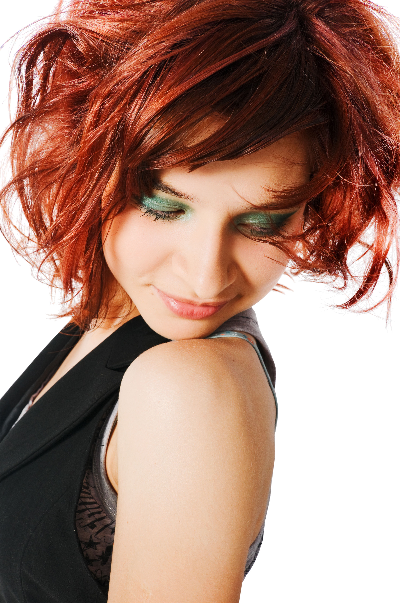
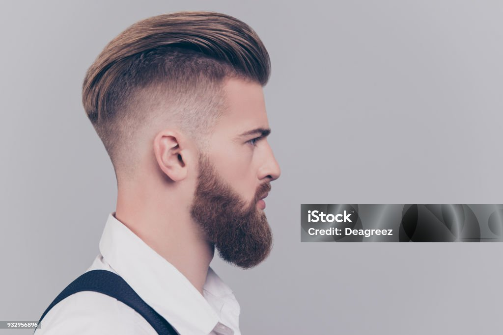
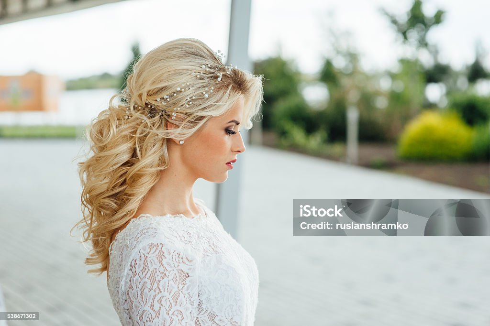
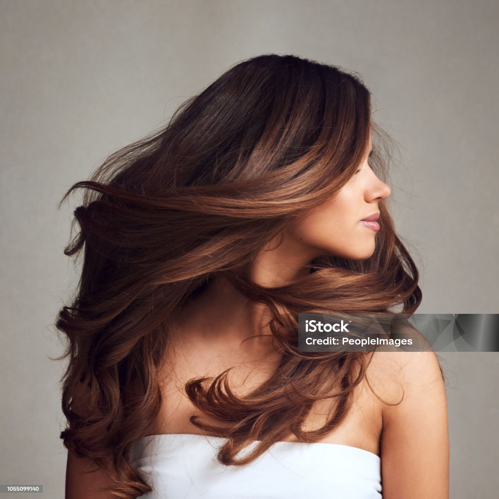
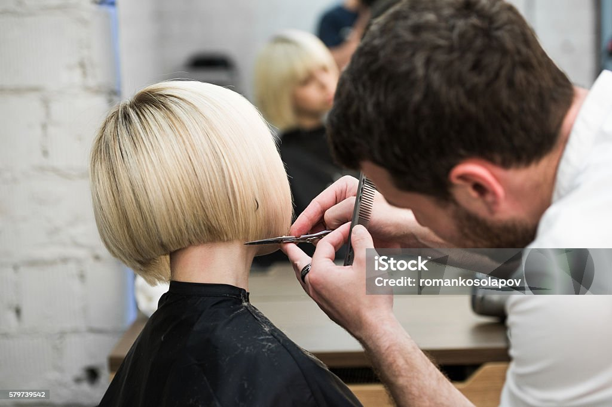
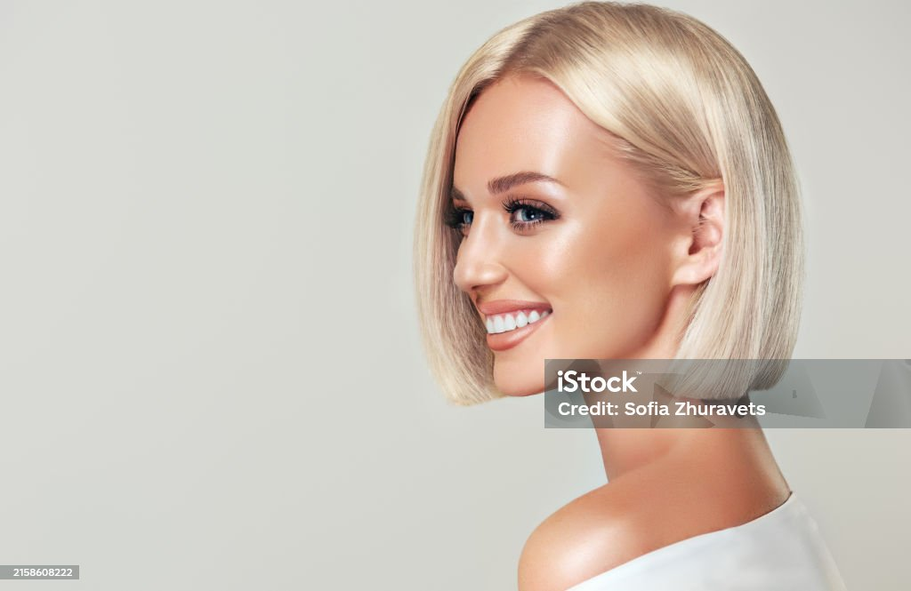

Tradizione, Passione e Stile a Treviso
Con oltre 20 anni di esperienza nel settore dell'acconciatura, New Hair Style rappresenta un punto di riferimento consolidato a Treviso. Nato dalla passione per l'arte del taglio e la cura della persona, il nostro salone unisce l'artigianalità e l'esperienza maturata nel corso degli anni con le tendenze stilistiche più moderne.
Ogni giorno ci dedichiamo ai nostri clienti con la stessa passione del primo giorno, offrendo consulenze d'immagine personalizzate e trattamenti di alta qualità per valorizzare la bellezza e lo stile unico di ognuno.

Look contemporanei e dinamici, studiati per valorizzare i tratti del viso con un tocco di stile attuale.

Tagli classici e moderni curati nei minimi dettagli, con rifiniture precise per barba e capelli.

Acconciature esclusive e raffinate per rendere unici i momenti più importanti e speciali della tua vita.

Trattamenti dedicati, pieghe impeccabili e scalature sartoriali per dare volume e luminosità.

Soluzioni di stile pratiche ed eleganti, facili da gestire ogni giorno senza rinunciare alla classe.

Linee decise e geometriche o look sbarazzini per esprimere al meglio la propria personalità.